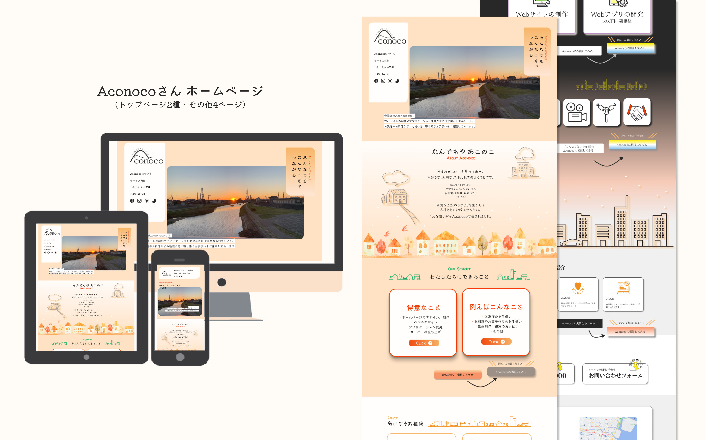
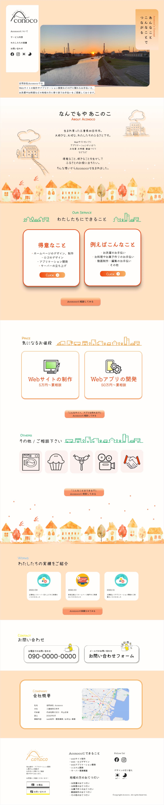
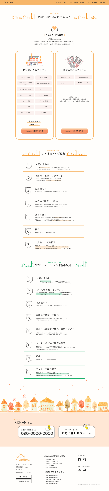
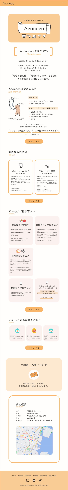
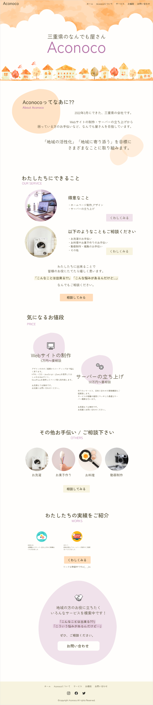
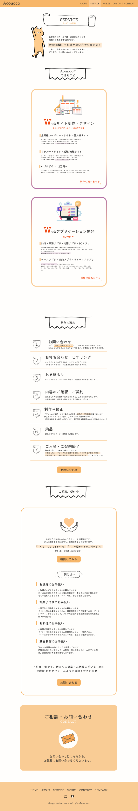

Works３
制作物のご紹介

- サイト制作の経緯・会社概要
-
合同会社Aconoco 会社ホームページ
合同会社Aconocoさんより、会社のホームページ制作の依頼を頂き、制作させていただきました。
【Aconocoさん】
三重県でWeb制作、Webアプリケーションの開発からお洗濯やお料理などのお手伝い事業を担うAconocoさん。
バックエンド開発者の社長さんのほか、ご家族みなさんで事業に携わっています。
得意なことや好きなことを生かし「地域のお役に立ちたい」と会社を設立されたそう。
「お手伝い事業の内容は地域のみなさんと考えたいんだ♡」というお言葉が印象的。 - 制作の目的・目標
-
会社の設立に伴うサイト開設。
会社の紹介と、気軽に依頼してほしい想いを伝え、受注促進を目指す。 - ターゲット
- 20代からお年寄りまでと幅広く。
- 制作期間
- 2021年11月より1.5ヶ月
- 担当したこと
- 要件定義・ロゴデザイン・サイトデザイン・コーディング(HTML・CSS・JavaScript・jQuery)
- 制作の思い出・意識した点
-
初めて要件定義から担当させていただきました。
サイトデザインのみでなく、ロゴデザインやサイトのキャッチフレーズ、サービス内容に関わることまで幅広くご提案させていただいたので、完成・納品の際は涙が出るほど嬉しかったです。
朝と夜でデザインが切り替わったり(手動でも切り替え可能)、ボタンにマウスホバーすると画像がぴょっと現れたり、楽しくこだわって制作させていただきました。
見てくださる方にも楽しんでいただけたら嬉しく思います。
レスポンシブにも対応しています。各ページ多数のブレイクポイントを設け、表示の崩れがないよう努めました。
完成・納品させていただいたサイト


初期のご提案…(NG集 / 他にも多数!!)
なかなか納得のいくものが作れず、何案もご提案させていただきました…
時間が掛かっても「いいよ～♡」とご理解くださった社長さんには
心から感謝しております…!!!


